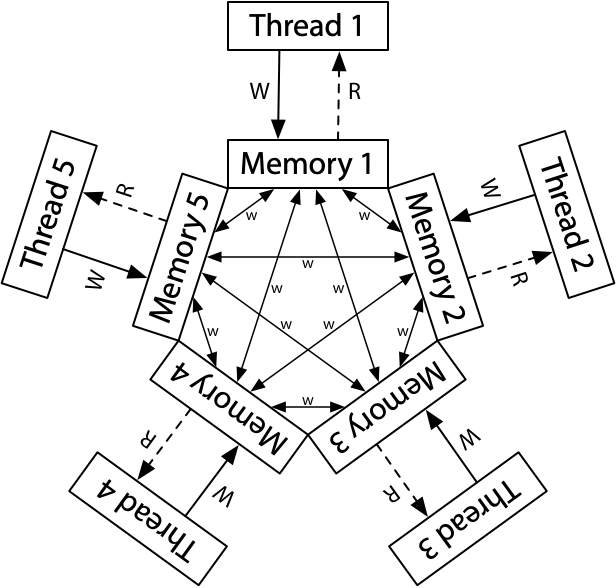

Go一向以它的简单易学而著称，我也遇到过同学说只需半天就能掌握Go语言了，两三年的Go开发经验就称专家了。
想比较Rust等编程语言，Go语言的确容易上手，查看Go语言的规范你也会看到，它的语言规范相比较其它编程语言非常的简短，的确可以一个小时就可以读完。但是如果你深入了解这门语言(其它语言也是类似情况)，就会发现很多细节的地方，需要花谢心思和时间仔细琢磨琢磨。这不，我先来几道Go并发的源代码考考你，看看你能回答上来不？
几道Go并发的源代码问题
在另一个goroutine看到的write顺序
下面这段代码，是否可能输出1, 0?
|
|
两个goroutine交叉read/write
下面这段代码是否可能输出 r1= 0, r2 =0这样的结果？
|
|
两个goroutine看到的write顺序
下面这段代码, ❶和❷可能输出1,0和0,1这两种不同的结果吗？
|
|
sync.Once
下面是Go标准库中sync.Once的实现，虽然很简单的几行代码，你品一品，有没有什么疑问？
|
|
为什么❹处不使用atomic?那么❶和❺处不使用atomic行不行？
sync.WaitGroup
下面是一段WaitGroup的示例代码, ❶处需要使用atomic.Load吗？ 如果不使用，一定输出10吗？
|
|
TryLock
下面这段代码是Mutex的TryLock方法的实现。❶处为什么不使用atomic,会不会导致锁已经释放了但是TryLock获取不到锁？
|
|
你可以先思考一下这几个问题，我们暂时不分析，接下来我们看看最新的Go内存模型，然后再分析这几个题目。
Go 内存模型
新版的(Go 1.19)内存模型对原有的内存模型文字做了大幅度的修改:
文档化 Go 对内存模型整体的实现方法
data race指对同一个内存位置有并发的write-write或者write-read，除非使用了atomic进行原子操作，否则可能就有数据竞争，所以你看啊, read-read并没有数据竞争。没有数据竞争的程序的行为就像所有的goroutine运行在单处理器上，这个属性有时候也叫DRF-SC(data-race-free programs execute in a sequentially consistent manner)。文档化 multiword race 可能会导致崩溃
- 文档化
runtime.SetFinalizer的 happens-before 规则 - 文档化(或者增加连接) 针对更多同步原语的 happens-before 规则
- 文档化
sync/atomic的 happens-before 规则， 对应 C++ 的 顺序一致性 atomic (以及其它语言Java，JavaScript, Rust, Swift, C, ...) - 文档化 禁止编译器优化
内存操作可以分为三者：
- read-like: 比如 read、atomic read、mutex lock 和channel receive
- write-like: 比如 write、atomic write、mutex unlock、channel send 和 channe close
- read-like和write-like并存: 比如 atomic compare-and-swap
内存模型有提出了两种关系: sequenced before和synchronized before。
在一个goroutine中执行的语句和表达式遵循sequenced before,按照Go语言规范中定义的控制流程和表达式的求值顺序执行。
如果一个同步执行的read-like的内存操作r观察到一个同步执行的write-like的内存操作w,那么w synchronized before r。
而happens before关系就被定义为一组sequenced before和synchronized before构成的具有传递性的组合。
我的理解，Go内存模型相当于把happens before关系细化了。
一个非同步的数据读取r, 读取内存地址x,如果写w对r可见，也就是r能观察到w话，需要保证:
- w happens before r
- w does not happen before any other write w' (to x) that happens before r (翻译过来还不如看英文哈)
其实我不想讲太多的关于Go内存模型的理论了，毕竟是翻译官方的文档，而且我翻译几次发觉翻译的不好，不如直接看官方文档。另外个人觉得这个官方文档也写得不好，虽然前面有一些定义，但是一些术语或者论据并没有很好的解释或者严格的论证(一家之言)。比如当你说some的时候，你要严格定义some到底包含哪些场景。当你说特定的术语或者短语时，你要定义术语或或者增加引用。
不管怎样，重要的，或者说对于Gopher来说容易理解的是，它对各种同步场景给了严格的保证(定义)，比如init、goroutine的创建和执行、channel、Mutex、RWMutex、Once以及新增加SetFinalizer,但是最最重要的是，终于提供了atomic的同步定义。
atomic的保证
sync/atomic包提供了一组原子操作。如果原子操作A能被原子操作B观察到，那么我们就说 A synchronized before B。
所有的程序中的原子操作的执行就像按照顺序一致性顺序执行一样。
和C++中的sequentially consistent atomic， 以及Java的volatile变量一样。
因为不同的CPU指令不同，所以具体的atomic的实现也是针对不同架构各有不同。我们以AMD64架构为例。
对于读操作，比如atomic.Load其实没有做任何处理，因为是single word读取：
|
|
对于写(读写)操作，使用LOCK前缀:
|
|
LOCK前缀可以确保共享内存可以排他使用，并且对数据的修改会通过MESI对其它处理器可见。LOCK在老的Intel CPU中可能采用锁总线的方式，但是在现代的CPU中，通过锁cache line方式。一个更清楚的解释可以看这篇文章x86 LOCK prefix。
Store就使用了XCHG指令，不需要LOCK前缀，本身它就具有LOCK的功能。
|
|
虽然我们看的是AMD64架构的atomic实现，但是我们不妨看一个x86架构的Load64，这是一个很有意思的知识点。
x86是32位的架构，word是32位，读取int64的值的时候就是multiword的场景，不使用atomic,就可能读到部分修改的值，所以32位的情况下，原子读取int64的值需要特殊处理一下，不想AMD64架构下直接读取:
|
|
首先它会检查是否是8byte对齐，要是不对齐就会panic。然后呢，使用MMX0寄存器(64bit)巧妙的实现原子读取。
WaitGroup、Cond、sync.Pool、sync.Map
最新的Go内存模型还在注释(go doc)对各种并发原语的内存模型进行了定义，虽然我觉得在Go内存模型文档中记录更合理一些。
比如WaitGroup:
In the terminology of the Go memory model, a call to Done “synchronizes before” the return of any Wait call that it unblocks.
比如 Cond:
In the terminology of the Go memory model, Cond arranges that a call to Broadcast or Signal “synchronizes before” any Wait call that it unblocks.
比如Pool:
In the terminology of the Go memory model, a call to Put(x) “synchronizes before” a call to Get returning that same value x. Similarly, a call to New returning x “synchronizes before” a call to Get returning that same value x.
比如sync.Map:
In the terminology of the Go memory model, Map arranges that a write operation “synchronizes before” any read operation that observes the effect of the write.
比如RWMutex:
In the terminology of the Go memory model, the n'th call to Unlock “synchronizes before” the m'th call to Lock for any n < m, just as for Mutex. For any call to RLock, there exists an n such that the n'th call to Unlock “synchronizes before” that call to RLock, and the corresponding call to RUnlock “synchronizes before” the n+1'th call to Lock.
比如Mutex:
In the terminology of the Go memory model, the n'th call to Unlock “synchronizes before” the m'th call to Lock for any n < m. A successful call to TryLock is equivalent to a call to Lock. A failed call to TryLock does not establish any “synchronizes before” relation at all.
比如Once:
In the terminology of the Go memory model, the n'th call to Unlock “synchronizes before” the m'th call to Lock for any n < m. A successful call to TryLock is equivalent to a call to Lock. A failed call to TryLock does not establish any “synchronizes before” relation at all.
比如runtime.SetFinalizer:
In the terminology of the Go memory model, a call SetFinalizer(x, f) “synchronizes before” the finalization call f(x). However, there is no guarantee that KeepAlive(x) or any other use of x “synchronizes before” f(x).
为什么要了解这些保证，或者说为什么要了解Go内存模型呢？就是为了能编写data-race-free、没有并发问题的程序。
比如下面一段并发代码：
|
|
这里done的读写并没有使用atomic进行同步控制，所以在main goroutine中没有保证"a的赋值" happens before "done的赋值",所以这个程序有可能输出空的字符串，甚至极端main goroutine一直观察不到done的赋值导致程序永远没办法完成。
x86的TSO
不同的CPU架构对memory order的处理是不一样的，而Go内存模型保证的是在所有支持的架构下的一致性。有些并发问题在x86是没问题的，但是在ARM架构下可能会有问题。
我们看看现代的x86的内存模型。下面是它们的一种架构:
每一个处理器都有自己的写队列，同时都连着一个共享主内存。处理器读的时候先查询自己的写队列，再查询主内存。处理器不会查询其它处理器的写队列。
虽然处理器会看到自己的写，暂时看不到其它处理器的写，但是到了主内存的时候，所有的写都是顺序的，所有的处理器看到的主内存的写都是有序的，所以x86的内存模型也叫做存储全序模型(TSO,total store order)。
对于x86内存模型，只要一个值写入了主内存，未来的读会看到它(直到一个新的写覆盖了它)。
ARM/POWER 使用一种更宽松的内存模型，每个处理器都读写它自己的内存副本，每个写都会独自传播到其它的处理器。在传播的时候允许重排序,并没有像x86 存储全序。

但是对于ARM/POWER， 不同线程对同一个内存地址的写是全序的，也就是一个线程观察到的同一个内存地址的写和另一个线程观察到的同一个内存地址的写顺序都是一样的，尽管对不同的地址的写观察到的顺序可能不一样，这被称之为Coherence。
分析上面的问题
啰嗦了这么多，其实还是讲一个memory model的背景,而且这些这些知识也在Russ Cox的硬件内存模型做了介绍，也有很多相关的文章专门介绍memory order等相关的知识。 Russ Cox为了修订Go内存模型，专门对此做了深入的研究，还写了三篇文章对此进行介绍。
以上都是理论，但是Go内存模型对真实的并发程序有什么指导呢？那就逐个分析开头我们提出的几个问题吧。
在另一个goroutine看到的write顺序
第一道题，下面这段代码❶是否可能输出1, 0?
对于x86架构， 答案是: 否。
x86架构保证TSO,存储有序。 对于第一个写goroutine， x,y的写入顺序是保证有序的，写入到第一个线程的write queue保证 x sequenced before y, 又因为TSO存储有序， 其它的goroutine观察到的顺序也是x sequenced before y。
对于ARM架构， 答案是: 是。 对于第一个写goroutine， x,y的写入顺序是有序的,但是由于arm架构不是TSO， 对x,y的写在传播到其它处理器时，可能会重排序，所以有可能有的处理器看到x,y write,有的看到y,x write。
|
|
两个goroutine交叉read/write
第二道题，下面这段代码是否可能速出 r1= 0, r2 =0这样的结果？
正常的理解, x=1或者y=1先会发生，或者输出结果总会有一个1, 所以r1= 0, r2 =0不太可能发生。
但是，在x86架构下，两个goroutine(线程)把它们的write放入write buffer,之后接着读另一个变量，这个时候它们的写可能还没有同步到主内存中，就会导致它们的读到的还是零值。所以在x86下答案是： 是, 有可能发生。
对于ARM/POWER, 也类似，goroutine各自的写有可能还未传播到对方的处理器，所以答案也是: 是， 有可能发生。
|
|
两个goroutine看到的write顺序
下面这段代码, ❶和❷可能输出1,0和0,1这两种不同的结果吗？
对于x86架构， 答案是: 否, 不可能发生。既然第三个goroutine已经观察到了1,0,因为x86是TSO,存储有序，所以x=1 sychronized before y=1, 第四个goroutine观察到的只能是0,0、1,0或者1,1,不可能是0,1。
对于ARM架构，答案是: 是, 是有可能发生的，不同的线程观察到的对不同的内存地址的写的顺序可能不同。
|
|
sync.Once
上面都是一些测试例子，为了举例内存同步的复杂性，接下来我们看一下实际标准库中为了内存同步所做的特殊处理。
下面是Go标准库中sync.Once的实现，虽然很简单的几行代码，你品一品，有没有什么疑问？
这个简短的几行代码经常会对深入研究Go代码的同学造成困惑，为什么❹处不使用atomic? 那么❶和❺处不使用atomic行不行？
❹处执行一个double check, ❺处的对o.done执行了一个写，他俩不会data race么？
假定g1执行了❺, 一个并发的的g2也正好执行到了❷。
因为根据g1, ❺ sequnenced before ❸, 根据Mutex的保证， g2的❷ synchronized before ❹， 所以当g2获取了获取，执行到4的时候，他是能看到g1已经把o.done标记为1了。
那么 ❶和❺处不使用atomic行不行？不行！ 严谨的说，为了性能，不行!
❶和❺处为了实现同步，必须要使用同步原语，这里最简单的就是使用atomic。 ❺处的写一定会被❶处的读看到。
如果❶和❺处不使用atomic,那么极端情况❶处总是检查o.done==0,然后总是会进入doSlow进行double check,耗费性能。
对于x86架构， ❶处可以不使用atomic,但是❺处必须使用atomic,以便能把done=1写入到主内存中。
|
|
sync.WaitGroup
下面是一段WaitGroup的示例代码, ❶处需要使用atomic.Load吗？ 如果不使用，一定输出10吗？
答案是: 不需要， 一定输出10。
❶ suquenced before ❷, ❷ synchronized before ❸, ❸ sequenced before ❹, 所以❹一定会看到各个goroutine对count的写， 所以❹处不需要atomic。
|
|
TryLock
下面这段代码是Mutex的TryLock方法的实现。❶处为什么不使用atomic,会不会导致锁已经释放了但是TryLock获取不到锁？
答案是: 会, 在某些CPU架构下，有可能锁已经释放了，但是后续的 goroutine会获取不到锁。
As far as the memory model is concerned,
l.TryLock(orl.TryRLock) may be considered to be able to return false even when the mutex l is unlocked.
就Go内存模型而言，即使 l 已经释放了锁,l.TryLock(或者l.TryRLock) 也可能返回false。
对于我们普通开发者而言，这叫做bug或者data race, 但是对于Go开发组来说，他们称之为为性能优化所做的特殊设计。
The memory model is defining when one event is synchronized before another. That sentence is saying that in a sequence Lock -> Unlock -> TryLock -> Lock there is no promise that the TryLock is synchronized before the Lock. The TryLock can fail to lock the mutex even though the mutex is unlocked.
From Ian Lance Taylor
但是对于x86来说，这不是一个问题。当一个goroutine释放了锁， ❶处是能及时观察到锁的释放的。但是对于Arm架构， 锁释放后， ❶处不一定能及时的获取到锁的释放，所以即使锁释放了，它依然可能返回false，这只是非常极端极端的情况。
|
|
参考资料
- https://research.swtch.com/hwmm
- https://github.com/golang/go/issues/5045
- https://go.dev/ref/mem
- https://github.com/golang/go/discussions/47141
- https://hackmd.io/@vesuppi/Syvoiw1f8
- https://www.chanmufeng.com/posts/concurrency/%E7%BC%93%E5%AD%98%E4%B8%80%E8%87%B4%E6%80%A7%E4%B8%8E%E5%86%85%E5%AD%98%E5%B1%8F%E9%9A%9C.html